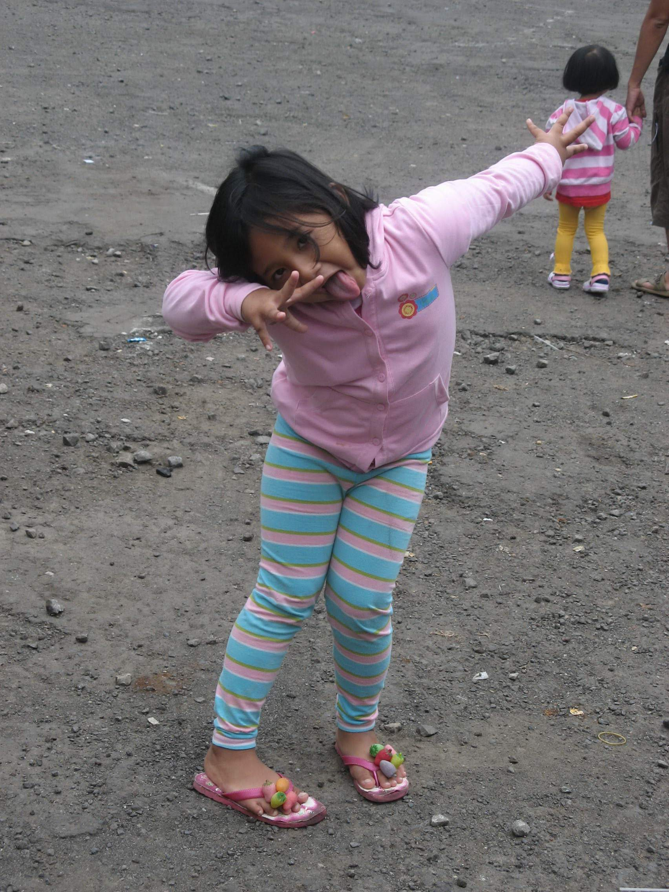

Childhood memory refers to memories formed during childhood. Among its other roles, memory functions to guide present behaviour and to predict future outcomes. Memory in childhood is qualitatively and quantitatively different from the memories formed and retrieved in late adolescence and the adult years. Childhood memory research is relatively recent in relation to the study of other types of cognitive processes underpinning behaviour. Understanding the mechanisms by which memories in childhood are encoded and later retrieved has important implications in many areas. Research into childhood memory includes topics such as childhood memory formation and retrieval mechanisms in relation to those in adults, controversies surrounding infantile amnesia and the fact that adults have relatively poor memories of early childhood, the ways in which school environment and family environment influence memory, and the ways in which memory can be improved in childhood to improve overall cognition, performance in school, and well-being, both in childhood and in adulthood.
